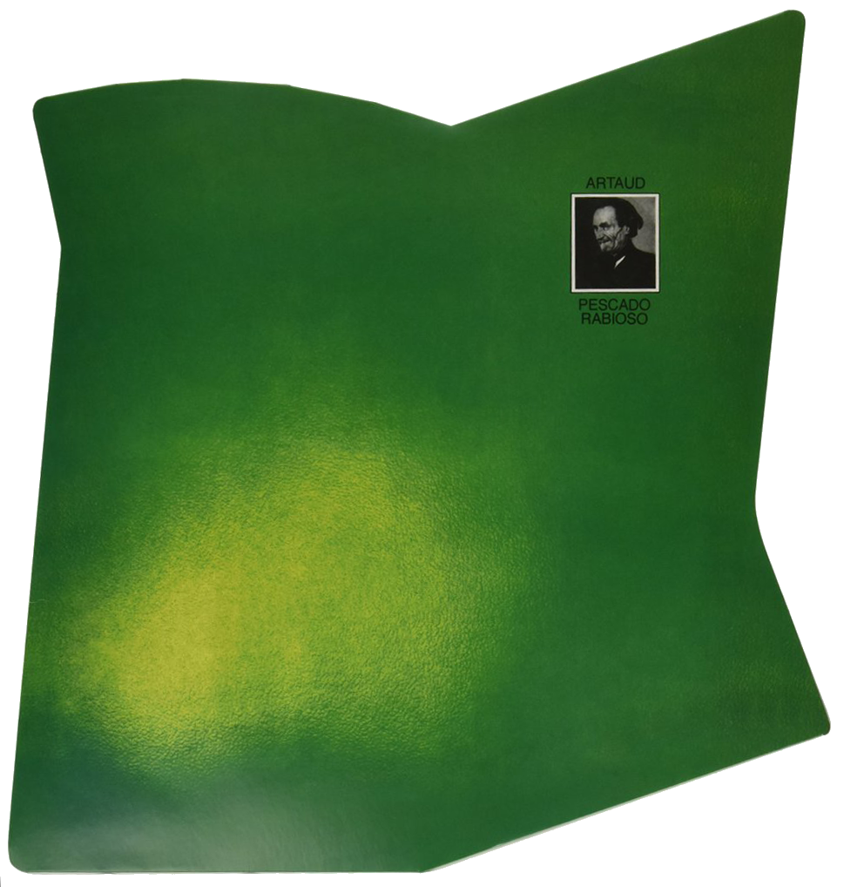
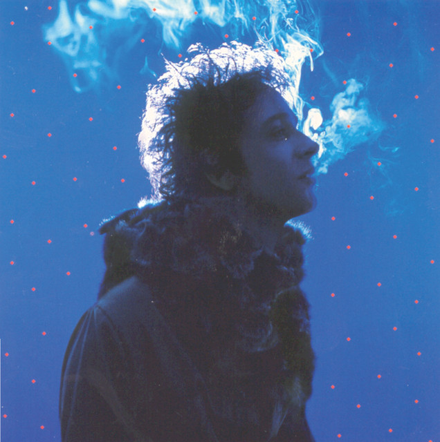
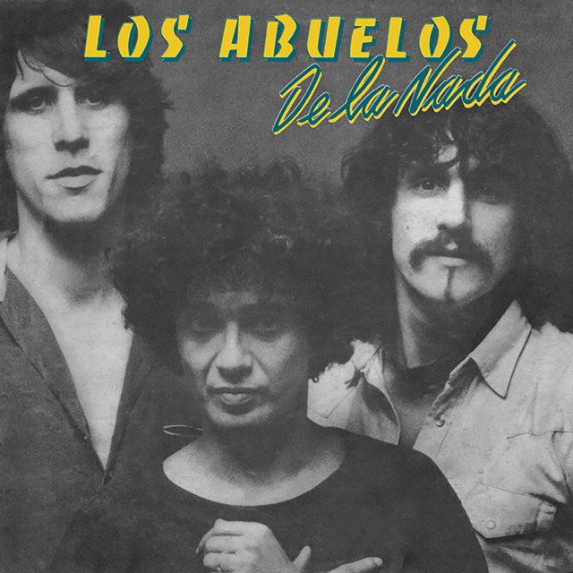
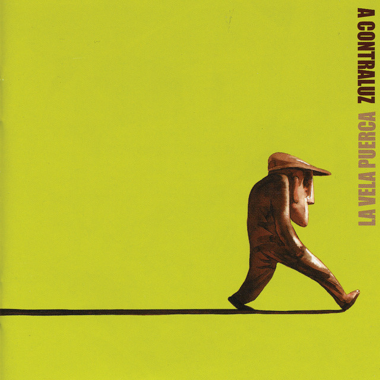

1973
ARTAUD
Luis Alberto Spinetta
"Todas las hojas son del viento, hasta que caen..."

1983
CLICS MODERNOS
Charly García
"Nos siguen pegando abajo..."

1990
CANCIÓN ANIMAL
Soda Stereo
"Un millón de años luz de casa..."

1986
OKTUBRE
Patricio Rey y sus Redonditos de Ricota
"Ji ji ji, se va a acabar, se va a acabar la dictadura del macho..."

1992
EL AMOR DESPUÉS DEL AMOR
Fito Páez
"Quién dijo que todo está perdido, yo vengo a ofrecer mi corazón..."

1999
BOCANADA
Gustavo Cerati
"Puedo ver a través, la pared de tu piel..."

1982
LOS ABUELOS DE LA NADA
Los Abuelos de la Nada
"Mil horas y un par de fantasmas..."

2004
A CONTRALUZ
La Vela Puerca
"Y sigo, sigo igual..."

2003
SEÑALES
Callejeros
"Una nueva noche fría en el barrio..."

2008
CRISIS
Las Pastillas del Abuelo
"No somos culpables de vivir..."

1992
MENTIRA LA VERDAD
Airbag
"Todo lo que das, de alguna forma vuelve"

1999
INFAME
Babasónicos
"Puesto, estoy puesto para vos"